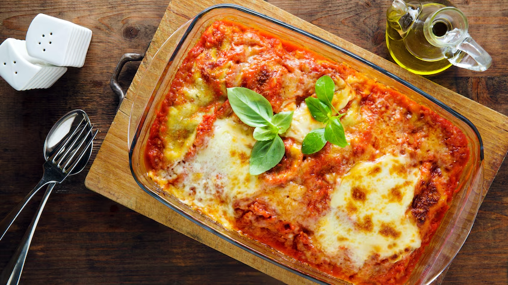

Sushi / Maki
Découvrez les repas savoureux pour profiter au maximum de votre repas.

Il y a des parfums qui ont le pouvoir de remonter le temps. Une vapeur qui s'échappe d'une cocotte, une croûte qui craque sous le doigt, et soudain, vous n'êtes plus dans votre cuisine, mais dans un souvenir. Ces recettes sont des histoires que l'on se transmet, des secrets murmurés entre deux ébullitions. Elles sont faites pour les dimanches de pluie, les tablées bruyantes et les rires qui durent. Préparez-vous à cuisiner bien plus que des aliments : vous allez réveiller des souvenirs.

Découvrez les repas savoureux pour profiter au maximum de votre repas.
Voir la recetteDécouvrez les repas savoureux pour profiter au maximum de votre repas.